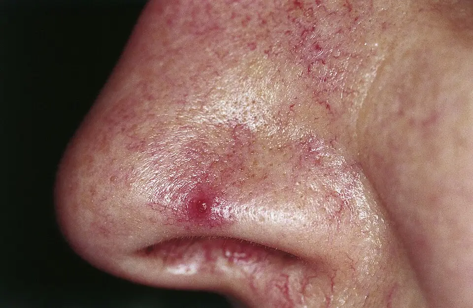

DX.6 — Troubles liés à l'alcool
1. Définition
Les troubles liés à l'alcool regroupent l'usage nocif, la dépendance, l'intoxication et le sevrage. Le DSM-5 les nomme trouble de l'usage d'alcoolIl associe perte de contrôle, craving, tolérance et sevrage.1,10. Ce trouble se distingue de la consommation à risque, qui ne remplit pas ces critères1.
2. Épidémiologie (Suisse, puis Europe)
En Suisse, près de 4 % de la population a une consommation chronique à risque, et près de 15 % une consommation épisodique à risque (OFS 2022)1. L'OFSP estime que 250 000 à 300 000 personnes sont alcoolodépendantes1. Le dépistage par l'AUDIT en consultation s'impose donc (point 9).
| Question | Réponse |
|---|---|
| Consommation épisodique à risque (%) | 10,7 % des femmes et 18,9 % des hommes ; 35 % chez les hommes de 20 à 24 ans (OFS 2022)1. |
| Décès liés à l'alcool en 2017 (nombre, 15–74 ans)1 | 1553 décès, soit environ 10 % des décès masculins et 5 % des décès féminins (OFSP)1. |
| Causes de ces décès (%) | 36 % de cancers, 21 % de troubles digestifs et hépatiques, 21 % de blessures (OFSP)1. |
| Coûts sociaux par an (francs) | Environ 2,8 milliards de francs, dont 2,1 milliards de pertes de productivité (OFSP)1. |
| Charge cérébrale en Europe (rang) | Les troubles liés à l'alcool figurent parmi les quatre affections cérébrales les plus invalidantes, avec la dépression, les démences et l'accident vasculaire cérébral (Wittchen 2011)2. |
| Dépendance à l'alcool ou aux drogues en Europe (% sur 12 mois)2 | Plus de 4 % de la population (Wittchen 2011, estimation 2010)2. |
| Insomnie chez les patients alcoolodépendants (%) | 36 à 91 % des patients, dont 59,8 % dans une méta-analyse de 3508 patients (Perney 2018)5. |
| Âge | Consommation épisodique à risque maximale à 20–24 ans1. |
| Sexe | Hommes plus à risque ; les femmes rattrapent surtout à 25–34 ans1. |
| Groupes à risque d'insomnie | Les antécédents psychiatriques, la dépendance sévère, la vie seul et une GGT anormale augmentent le risque5. |
| Fréquence relative aux autres DD | L'ordre de la liste n'est pas un classement. |
3. Physiopathologie
L'alcool agit sur le sommeil de trois façons : il cause une insomnie, il en est une conséquence et il aggrave les apnées1,3.
Amorce. Au niveau moléculaire, l'alcool potentialise le récepteur GABA et inhibe le récepteur NMDA du glutamate. Il en résulte une sédation, une anxiolyse et un endormissement plus rapide3,4.
Développement. Au niveau cellulaire, la tolérance s'installe : le cerveau réduit la réponse GABA et augmente la réponse glutamatergique. Le sommeil se fragmente dans la seconde moitié de la nuit, avec moins de sommeil lent.
Installation. L'arrêt brutal laisse un cerveau hyperexcitable : la carence en effet GABA et l'excès de glutamate provoquent tremblement, tachycardie, sueurs, convulsions et delirium tremens10.
Maintien. Les troubles du sommeil persistent en abstinence prolongée : endormissement long, éveils nocturnes, moins de sommeil lent, plus de sommeil paradoxal. Ils favorisent la rechute. Au niveau tissulaire, la carence en thiamine, fréquente chez le patient dénutri, provoque l'encéphalopathie de Wernicke.
| Perturbation | Exploration qui la montre | Thérapeutique et mécanisme |
|---|---|---|
| Hyperexcitabilité de sevrage (déficit GABA) | Score CIWA-Ar, signes vitaux | Valium® : renforce l'effet GABA et remplace l'alcool sur le récepteur10. |
| Carence en thiamine | Triade confusion, ataxie, atteinte oculaire | Benerva® : corrige la carence et prévient le syndrome de Korsakoff10. |
| Craving et rechute | Histoire des rechutes | Campral® : stabilise l'excitabilité glutamatergique ; réduit l'insomnie de 45 % contre 26 % sous placebo à 6 mois5. |
| Fragmentation du sommeil, hyperéveil | Journal du sommeil, ISI | TCC-I : réduit l'insomnie sans effet significatif sur la consommation6. |
| Aggravation d'apnées | Ronflements, polygraphie | Réduire l'alcool le soir ; traiter l'apnée (DX.2)6. |
4. Démarche diagnostique
Étape 1. Le médecin écarte d'abord les drapeaux rouges, car chacun annonce une complication du sevrage ou de l'intoxication dont l'issue peut être fatale10.
| Drapeau rouge | Hypothèse | Signe ou examen qui tranche | Piège | Conduite |
|---|---|---|---|---|
| 🚩 ConvulsionRouge : la convulsion de sevrage survient le plus souvent 12 à 48 heures après la dernière prise ; elle annonce un sevrage sévère10. | Sevrage compliqué | Heure de la dernière prise, CIWA-Ar | Prendre une convulsion pour de l'épilepsie | Hospitalisation, benzodiazépine |
| 🚩 Fièvre, hallucinations, confusionRouge : ce tableau, 48 à 72 heures après la dernière prise, définit le delirium tremens ; l'issue peut être fatale sans soins10. | Delirium tremens | Désorientation, tremblement généralisé, tachycardie | Attribuer la confusion à une psychose | Soins intensifs ou unité surveillée |
| 🚩 Confusion, ataxie, atteinte oculaireRouge : triade de l'encéphalopathie de Wernicke ; sans thiamine, l'issue est souvent fatale ou évolue vers un syndrome de Korsakoff. | Encéphalopathie de Wernicke | Nystagmus, ophtalmoplégie, démarche | Perfuser du glucose avant la thiamine | Thiamine immédiate |
| 🚩 Idées suicidairesRouge : l'alcool et l'insomnie augmentent le risque suicidaire. | Dépression sévère (DX.4)10 | Question directe | Ne pas interroger par crainte | Avis psychiatrique le jour même |
| 🚩 Somnolence profonde après alcool et sédatifRouge : l'alcool combiné aux benzodiazépines ou aux opioïdes déprime la respiration. | Intoxication mixte | Fréquence respiratoire, saturation | Sous-estimer un patient « juste ivre » | Urgences, voies aériennes |
| 🚩 Hématémèse, ascite, ictèreRouge : hypertension portale et insuffisance hépatique alcoolique. | Cirrhose décompensée | Examen abdominal, bilan hépatique | Ne chercher que le sevrage | Hospitalisation, avis hépatologique |
Étape 2. En l'absence de drapeau rouge, le médecin dépiste par l'AUDIT, confirme par les critères du DSM-5 et mesure l'insomnie par l'ISI7,8. Il recherche ensuite les autres causes d'insomnie : les apnées (DX.2), l'anxiété (DX.3), la dépression (DX.4), la douleur (DX.5) et les jambes sans repos (DX.7)7. Le syndrome de sevrage et la dépression (DX.4) se superposent souvent, car le sevrage comporte des symptômes dépressifs10.
5. Anamnèse ciblée et drapeaux rouges
Le médecin interroge sur la consommation, le sevrage et le sommeil ; chaque question porte une raison qui change la décision. L'insomnie liée à l'alcool présente des caractères propres, qui la distinguent d'une insomnie primaire.
Drapeaux rouges actionnables. Une convulsion ou une confusion fébrile impose l'hospitalisation en urgence. Une atteinte oculaire ou une ataxie impose la thiamine immédiate10. Une idée suicidaire impose d'adresser le patient en psychiatrie le jour même. Une hématémèse impose l'endoscopie et l'avis hépatologique en urgence.
6. Examen physique ciblé, région par région
Le médecin note d'abord l'état normal : le patient est orienté, ne tremble pas, a un pouls et une pression normaux et marche de façon stable. L'examen ciblé suit ensuite l'ordre topo-systémique : état général et signes vitaux, puis peau et tête et abdomen. Viennent enfin l'examen neurologique et les voies aériennes supérieures.
7. Approche syndromique
7.1 Le syndrome de sevrage associe une hyperactivité adrénergique et une hyperexcitabilité cérébrale10.
| Signes fonctionnels | Signes physiques | Mécanisme |
|---|---|---|
| AngoisseSensation de peur intense sans cause, présente à l'arrêt de l'alcool., insomnie, nausées | Tremblement, sueurs, tachycardie, hypertension, fièvre | Hyperactivité adrénergique et glutamatergique après retrait de l'effet GABA |
| Hallucinations, désorientation | Convulsions généralisées ; fièvre élevée, agitation (delirium tremens) | Hyperexcitabilité cérébrale sévère |
7.2 L'intoxication aiguë provoque une dépression du système nerveux central3.
| Signes fonctionnels | Signes physiques | Mécanisme |
|---|---|---|
| DésinhibitionPerte du contrôle des comportements sociaux sous l'effet de l'alcool., somnolence | Haleine alcoolisée, ataxie, nystagmus, parole pâteuse | Dépression du SNC par potentialisation GABA |
7.3 Le trouble de l'usage et la dépendance traduisent une neuroadaptation10.
| Signes fonctionnels | Signes physiques | Mécanisme |
|---|---|---|
| CravingDésir impérieux de boire., perte de contrôle, tolérance | Signes d'hépatopathie : angiomes, ascite ; stigmates de carences | Neuroadaptation du circuit de récompense |
7.4 L'insomnie liée à l'alcool fragmente la seconde moitié de la nuit3.
| Signes fonctionnels | Signes physiques | Mécanisme |
|---|---|---|
| Éveils en seconde moitié de nuitRéveils après l'élimination de l'alcool, quand l'effet sédatif disparaît et que l'éveil rebondit., sommeil non réparateurRéveil fatigué malgré une durée de sommeil suffisante., fatigue diurne | Somnolence, cernes ; apnée associée possible | Rebond après élimination de l'alcool ; moins de sommeil lent, plus de sommeil paradoxal3. |
7.5 L'encéphalopathie de Wernicke et le syndrome de Korsakoff résultent d'une carence en thiamine10.
| Signes fonctionnels | Signes physiques | Mécanisme |
|---|---|---|
| Amnésie à court termeIncapacité de retenir les faits récents, signe du syndrome de Korsakoff., confusion | Nystagmus, ophtalmoplégie, ataxie | Carence en thiamine, atteinte diencéphalique10,13. |
8. Diagnostic positif et critères
Le diagnostic de trouble de l'usage d'alcool suit le DSM-5 (American Psychiatric Association, 2013)10. Il exige au moins deux des onze critères sur 12 mois8. Leur nombre fixe la gravité : légère de 2 à 3, modérée de 4 à 5, sévère à 6 ou plus8. La tolérance et le sevrage font partie de ces critères10.
| Outil | Seuil | Usage |
|---|---|---|
| AUDIT | 8 ou plus : LR 6,5 pour le trouble de l'usage ; moins de 8 : LR 0,338. | Dépistage chez l'adulte |
| AUDIT-C | 4 ou plus chez l'homme, 3 ou plus chez la femme ; moins utile pour le diagnostic (LR 1,8 et 2,0)8. | Repérer la consommation excessive |
| CIWA-Ar | Score de 20 ou plus : sevrage sévère9,10. | Quantifier le sevrage, guider le traitement |
| ISI | Score plus élevé = insomnie plus sévère. | Mesurer l'insomnie liée à l'alcool |
Ce qui ne suffit pas. Un AUDIT-C positif ne prouve pas le trouble de l'usage. Une GGT élevée ne suffit pas non plus. Un patient qui dort mieux après un verre garde une insomnie entretenue par l'alcool.
9. Examens complémentaires
9.a Gold standard. Il n'existe pas de gold standard biologique, car le diagnostic reste clinique : il repose sur un entretien structuré selon le DSM-58. Pour l'insomnie associée, l'entretien clinique et le journal du sommeil servent de référence, et la PSG n'est pas utile en routine7.
9.b Première intention. Le médecin dépiste par l'AUDIT et mesure le sevrage par le score CIWA-Ar. Il évalue l'insomnie par l'ISI et le journal du sommeil. Il complète par un bilan biologique qui cherche les marqueurs de consommation et les complications ; les intervalles normaux sont ceux du laboratoire.
9.c Alternatives. Les marqueurs PEth ou CDT objectivent une consommation lorsque l'anamnèse est douteuse ; l'échographie hépatique reste possible pendant la grossesse. Devant une confusion, une atteinte oculaire ou un traumatisme crânien, il faut demander une imagerie cérébrale sans retarder la thiamine.
9.d Deuxième intention. La polysomnographie ou la polygraphie se discute si l'on suspecte des apnées, si l'insomnie résiste à la TCC-I ou si la somnolence reste inexpliquée7.
10. Arbre décisionnel
Devant un trouble du sommeil et une consommation d'alcool
11. Prise en charge selon les recommandations suisses
11.A But thérapeutique. À court terme, le patient doit passer le sevrage, qui dure jusqu'à une semaine, sans convulsion ni delirium10. À moyen terme, il maintient l'abstinence pendant 6 à 12 mois avec l'acamprosate19. À long terme, le sommeil doit redevenir réparateur, car il reste altéré en abstinence ; le suivi vise une baisse de l'ISI4,6.
11.B Moyens. Les situations d'urgence suivent une conduite chronologique, de la sécurisation du patient à la surveillance du delirium10.
Hors urgence, le traitement suit cet ordre.
- Mesures générales. Le médecin informe le patient des symptômes, le rassure, crée un environnement calme, veille à l'hydratation et traite les maladies sous-jacentes. Les symptômes légers disparaissent en effet souvent sans médicament10.
- Sevrage médicamenteux. Les benzodiazépines sont le premier choix des symptômes sévères, et la plupart des patients reçoivent le diazépam, à longue durée d'action10. Chez la personne âgée ou l'hépatopathe, le risque d'accumulation fait préférer une molécule à durée intermédiaire comme l'oxazépam10. L'AIPS de Seresta® autorise l'oxazépam dans le sevrage aigu de l'alcoolique16. En revanche, l'AIPS de Temesta contre-indique le lorazépam en dépendance alcoolique15. Un schéma guidé par le score CIWA-Ar raccourcit le traitement, mais il exige une surveillance hospitalière ou spécialisée10. Le guide de l'ASAM de 2020 détaille aussi cette prise en charge11. Le clométhiazole est une alternative réservée au milieu hospitalier17.
- Prévention de la rechute. L'acamprosate, le disulfirame et la naltrexone améliorent l'abstinence par rapport au placebo12. Le nalméfène vise la réduction de la consommation chez l'adulte à risque élevé20.
- Mesures non médicamenteuses. L'intervention brève, le soutien psychosocial continu et la TCC accompagnent chaque traitement20. La TCC-I réduit l'insomnie de 5,51 points d'ISI après traitement, et cet effet se maintient à 6 mois ; les résultats sur l'alcool ne diffèrent pas des contrôles6.
| Médicament | Indication | Dose AIPS | Limite majeure |
|---|---|---|---|
| Valium® | Il traite le sevrage sévère et le delirium tremens. | Le delirium tremens reçoit 0,1 à 0,2 mg/kg par voie intraveineuse, toutes les 8 heures14. | Il est contre-indiqué en insuffisance respiratoire ou hépatique sévère14. |
| Seresta® | Il traite le sevrage aigu de l'alcoolique. | Le sevrage aigu reçoit 15 à 30 mg, 3 à 4 fois par jour16. | Il est contre-indiqué en apnée du sommeil et en insuffisance respiratoire sévère16. |
| Distraneurin® | Il traite le sevrage aigu à l'hôpital. | Le premier jour reçoit 9 à 12 capsules en 3 à 4 prises, et la cure ne dépasse pas 10 jours17. | Il est contre-indiqué en insuffisance respiratoire aiguë17. |
| Benerva® | Il prévient et traite l'encéphalopathie de Wernicke. | La forme sévère reçoit jusqu'à 200 mg par jour par voie intramusculaire ou intraveineuse lente18. | L'anaphylaxie intraveineuse reste très rare10. |
| Campral® | Il maintient l'abstinence. | L'adulte prend 2 comprimés 3 fois par jour pendant 6 à 12 mois19. | Il est contre-indiqué si la créatinine dépasse 120 µmol/L et pendant l'allaitement19. |
| Selincro® | Il réduit la consommation à risque élevé. | Le patient prend 18 mg à la demande, au plus un comprimé par jour20. | Il est contre-indiqué sous opioïde et après un sevrage aigu récent20. |
| Antabus® | Il soutient l'abstinence par dissuasion. | Le patient prend 800 mg par jour pendant 3 jours, puis la dose d'entretien21. | Il est contre-indiqué en cardiopathie sévère, en grossesse et en hépatopathie avancée21. |
| Temesta® | Il ne convient pas à ce patient. | L'insomnie ordinaire reçoit 1 mg avant le coucher, hors dépendance15. | Il est contre-indiqué en dépendance alcoolique et en apnée du sommeil15. |
Insomnie chez le patient alcoolodépendant. L'AIPS de Temesta contre-indique le lorazépam en cas de dépendance à l'alcool ou d'intoxication aiguë15. La TCC-I reste donc le traitement de première intention7. L'acamprosate diminue aussi l'insomnie, et l'abstinence explique 55,7 % de cet effet5.
Situations spéciales. Chaque terrain impose ses propres limites.
- Pendant la grossesse, l'AIPS réserve le diazépam à une nécessité absolue et contre-indique le disulfirame ; pendant l'allaitement, elle contre-indique l'acamprosate et l'oxazépam14211916.
- En insuffisance hépatique sévère, le diazépam et le nalméfène sont contre-indiqués, et l'acamprosate n'est pas recommandé en classe de Child-Pugh C142019.
- En insuffisance rénale, l'acamprosate est contre-indiqué si la créatinine dépasse 120 µmol/L, et le nalméfène l'est si le DFGe tombe sous 30 mL/min1920.
- Chez le sujet âgé, l'acamprosate n'a pas été étudié après 65 ans et ne devrait pas être utilisé ; la demi-vie du diazépam s'allonge de 2 à 4 fois1914.
- Chez l'enfant et l'adolescent, l'acamprosate, le nalméfène et le disulfirame ne sont pas indiqués avant 18 ans192021.
Social et professionnel. Le médecin conseille de ne pas conduire sous alcool ou sous sédatif. En cas de dépendance, il peut signaler l'inaptitude à conduire, car la LCR (art. 15d) le délie du secret. L'arrêt de travail peut couvrir la période du sevrage. Les soins de la dépendance sont pris en charge par la LAMal. La LAA peut réduire les indemnités d'un accident non professionnel causé par négligence grave, dont l'ivresse. La LAI intervient si la capacité de gain reste durablement réduite.
11.C Surveillance. Pendant le sevrage, l'équipe suit de près le CIWA-Ar, les signes vitaux et l'état de conscience10. Après le sevrage, le médecin contrôle à chaque visite le bilan hépatique, la consommation déclarée, le craving et l'ISI. Il arrête le disulfirame si une hépatite apparaît21.
11.D Pronostic. Les symptômes de sevrage durent jusqu'à une semaine, et ils deviennent sévères chez 3 à 5 % des patients10. Sans thiamine, l'encéphalopathie de Wernicke est souvent fatale ; un syndrome de Korsakoff, souvent irréversible, apparaît chez de nombreux patients10. L'insomnie persiste en abstinence et favorise la rechute3,4.
Le patient quitte l'hôpital lorsque quatre critères sont réunis. Le score CIWA-Ar reste bas sans benzodiazépine intraveineuse. La confusion et l'ataxie ont disparu. Le patient s'alimente. Un suivi addictologique est organisé.
12. Prévention
| Niveau | Geste | Population cible |
|---|---|---|
| Primaire | Aucun niveau de consommation n'est sans danger pour la santé selon l'OFSP ; limiter la consommation, surtout chez les jeunes de 15 à 24 ans1. | Population générale |
| Secondaire | Dépistage par AUDIT-C et intervention brève ; la brochure OFSP, FMH et ISPA est citée dans l'AIPS de Selincro20,8. | Consommateurs à risque |
| Tertiaire | Traitement de maintien, soutien psychosocial, TCC-I, suivi hépatique6,12. | Patients dépendants |
Le lien avec l'épidémiologie du point 2 est direct, car près de 15 % de la population boit de façon épisodique à risque1.
13. Points clés
- Le sevrage débute 6 à 8 heures après la dernière prise et culmine vers 72 heures10.
- Une convulsion, une confusion fébrile ou une ataxie imposent l'hospitalisation et la thiamine.
- La thiamine précède le glucose chez le patient dénutri, mais en cas d'hypoglycémie le glucose n'est pas retardé et la thiamine est donnée en même temps.
- Les benzodiazépines sont le premier choix du sevrage sévère, guidé par le CIWA-Ar.
- L'alcool endort vite mais fragmente la nuit ; l'insomnie persiste en abstinence.
- Le lorazépam est contre-indiqué en dépendance alcoolique et en apnée du sommeil.
14. Pièges et questions fréquentes à l'examen fédéral suisse
- Quand commence le sevrage alcoolique ? Réponse : il commence 6 à 8 heures après la dernière prise10.
- Quel score CIWA-Ar définit un sevrage sévère ? Réponse : un score de 20 ou plus le définit10.
- Quel médicament donner avant le glucose ? Réponse : la thiamine, pour éviter d'aggraver Wernicke.
- Quel est le premier choix du sevrage sévère ? Réponse : une benzodiazépine, de préférence le diazépam.
- Quelle benzodiazépine choisir chez l'hépatopathe ou le sujet âgé ? Réponse : l'oxazépam, à durée intermédiaire ; l'AIPS suisse contre-indique le lorazépam en dépendance alcoolique.
- Quel est le seuil de l'AUDIT ? Réponse : le seuil est de 8 ou plus ; l'AUDIT-C retient 4 chez l'homme et 3 chez la femme8.
- Quelle contre-indication rénale pour l'acamprosate ? Réponse : l'AIPS le contre-indique si la créatinine dépasse 120 µmol/L19.
- Combien de temps prescrire l'acamprosate ? Réponse : l'AIPS prévoit 6 à 12 mois19.
- Le nalméfène convient-il sous opioïde ? Réponse : non, car l'AIPS le contre-indique avec les agonistes opioïdes20.
- Un hypnotique de type benzodiazépine convient-il à l'insomnie du patient alcoolodépendant ? Réponse : non ; la TCC-I est de première intention.
- Le DX.6 est-il plus fréquent que le DX.5 ? Réponse : aucune comparaison de fréquence n'est établie, car l'ordre de la liste n'est pas un classement.
Questions clés et raison physiopathologique
| Question | Pourquoi elle change la décision |
|---|---|
| Combien de verres standards le patient boit-il par jour ? | La consommation est à risque chronique au-delà de 2 verres standards par jour chez la femme et de 4 chez l'homme1. |
| Boit-il 4 verres (femme) ou 5 verres (homme) en une occasion ? | Ce seuil, atteint au moins une fois par mois, définit la consommation épisodique à risque1. |
| À quelle heure a eu lieu la dernière prise ? | Le sevrage débute 6 à 8 heures après la dernière prise et culmine vers 72 heures ; l'heure prédit donc la fenêtre des convulsions et du delirium10. |
| A-t-il fait une convulsion ou un delirium lors d'un arrêt ? | Cet antécédent prédit un sevrage sévère et impose l'hospitalisation10. |
| Boit-il pour dormir ? | L'alcool raccourcit l'endormissement mais fragmente la fin de nuit, ce qui entretient l'insomnie3. |
| Ressent-il un craving, une perte de contrôle, a-t-il tenté d'arrêter ? | Ces éléments sont des critères de dépendance du DSM-510. |
| Mange-t-il, vomit-il, perd-il du poids ? | Un régime déficient et une mauvaise résorption expliquent la carence en thiamine10. |
| Prend-il des benzodiazépines, des hypnotiques ou des opioïdes ? | L'association avec l'alcool déprime la respiration et peut provoquer le coma14. |
| Ronfle-t-il, fait-il des pauses respiratoires ? | L'alcool du soir aggrave l'apnée du sommeil (DX.2)3. |
| Son humeur, son anxiété ou une douleur le gênent-elles ? | Ces comorbidités entretiennent la consommation (DX.3, DX.4, DX.5)3. |
| Conduit-il, travaille-t-il, une grossesse est-elle possible ? | Ces situations exposent des tiers et orientent la conduite sociale et obstétricale. |
Caractérisation de l'insomnie liée à l'alcool
| Caractère | Ce que le patient décrit | Typique ou non, et pourquoi |
|---|---|---|
| Horaire | Le patient s'endort vite après l'alcool, puis se réveille dans la seconde moitié de la nuit3. | Ce profil est typique, car l'éveil rebondit quand l'alcool est éliminé3. |
| Type | Le sommeil reste non réparateur, avec moins de sommeil lent et plus de sommeil paradoxal3. | Ce profil est typique de l'abstinence récente et prolongée3,4. |
| Facteur déclenchant | Le patient boit le soir pour s'endormir, ou il vient d'arrêter de boire3,10. | L'insomnie avec angoisse à l'arrêt est typique du sevrage10. |
| Durée | L'insomnie persiste des semaines à des mois après l'arrêt3,4. | Cette persistance est typique et favorise la rechute4. |
| Signes associés | Le patient tremble, sue et a le cœur rapide au sevrage ; son conjoint décrit des ronflements3,10. | Les ronflements orientent vers une apnée associée (DX.2), qui n'est pas l'insomnie elle-même3. |
| Fréquence | L'insomnie touche 36 à 91 % des patients alcoolodépendants5. | Elle est donc attendue, et son absence ne réfute pas le trouble5. |
| Signe atypique | Une confusion fébrile avec hallucinations survient 48 à 72 heures après l'arrêt10. | Ce tableau n'est pas une insomnie : il définit le delirium tremens, qui relève des soins intensifs10. |
État général et signes vitaux
| Signe recherché | Technique | Aspect et valeur | Piège |
|---|---|---|---|
| Pouls et pression artérielle | Le médecin compte le pouls pendant une minute et mesure la pression9. | La tachycardie, l'hypertension et la fièvre accompagnent le sevrage10. | Une fièvre élevée avec confusion évoque le delirium tremens ou une infection associée10. |
| Tremblement des mains | Le patient tend les bras, doigts écartés ; le médecin touche ses doigts du bout des siens9. | Un tremblement seulement perçu au bout des doigts vaut 1 point ; un tremblement visible bras tendus en vaut 49. | La caféine et l'anxiété provoquent aussi un tremblement. |
| Sueurs paroxystiques | Le médecin observe les paumes et le front9. | Des paumes moites valent 1 point ; des gouttes sur le front en valent 49. | Un patient fébrile transpire aussi. |
Peau et tête
| Signe recherché | Technique | Aspect et valeur | Piège |
|---|---|---|---|
| Angiomes stellaires, érythème palmaire | Le médecin inspecte le thorax et les paumes. | Ces signes suggèrent une hépatopathie chronique. | Ils se voient aussi pendant la grossesse. |
| Haleine et conjonctives | Le médecin recherche une odeur d'alcool et un ictère des sclères. | Ces signes confirment une prise récente ou une cholestase. | L'absence d'odeur n'exclut pas un trouble de l'usage. |
L'angiome stellaire se reconnaît à sa papule centrale. Cette photographie montre l'aile du nez en lumière directe.

- Premier repère. La papule rouge centrale correspond à l'artériole nourricière.
- Deuxième repère. Des vaisseaux fins rayonnent autour de la papule, ce qui donne l'aspect en araignée.
- Une pression sur la papule fait blanchir la lésion, qui se recolore depuis le centre au relâchement.
- L'angiome stellaire suggère une hépatopathie chronique, mais il se voit aussi pendant la grossesse.
Ce que l'image décide. Devant plusieurs angiomes stellaires chez un buveur, le médecin cherche une hépatopathie par l'examen abdominal et le bilan hépatique.

Abdomen
| Signe recherché | Technique | Aspect et valeur | Piège |
|---|---|---|---|
| Foie et matité des flancs | Le médecin palpe le bord du foie à l'inspiration et percute les flancs en décubitus. | Une hépatomégalie ou une ascite orientent vers l'hépatopathie alcoolique. | Un foie normal à la palpation n'exclut pas une stéatose. |
Examen neurologique
| Signe recherché | Technique | Aspect et valeur | Piège |
|---|---|---|---|
| Nystagmus, ophtalmoplégie | Le patient suit un doigt dans les quatre directions du regard. | Un nystagmus ou une paralysie oculaire, avec confusion et ataxie, évoquent l'encéphalopathie de Wernicke10. | L'ivresse aiguë provoque aussi un nystagmus. |
| Ataxie | Le patient marche talon contre orteil. | Une ataxie évoque l'atteinte cérébelleuse alcoolique ou l'encéphalopathie de Wernicke10. | L'ivresse et les benzodiazépines provoquent aussi une ataxie. |
| Orientation | Le médecin demande le jour, le lieu et son propre rôle, puis fait faire des additions en série9. | Le patient orienté réussit les additions ; une désorientation de plus de 2 jours sur la date ou sur le lieu est sévère9. | Une hypoglycémie, une encéphalopathie hépatique ou un hématome sous-dural simulent cette confusion. |
Voies aériennes supérieures
| Signe recherché | Technique | Aspect et valeur | Piège |
|---|---|---|---|
| Cou et oropharynx | Le médecin mesure le tour de cou et classe la visibilité de la luette. | Un cou large et un oropharynx encombré orientent vers l'apnée obstructive (DX.2). | Un examen normal à l'éveil n'exclut pas l'apnée. |
AUDIT
L'AUDIT compte 10 questions et sert au dépistage chez l'adulte8. Un score de 8 ou plus porte un rapport de vraisemblance de 6,5 pour le trouble de l'usage, et un score inférieur à 8 un rapport de 0,338. L'AUDIT-C retient 4 ou plus chez l'homme et 3 ou plus chez la femme 8. Il repère la consommation excessive mais aide peu au diagnostic, avec des rapports de 1,8 et 2,08.
| Résultat | Signification | Conduite |
|---|---|---|
| Le score est inférieur à 8. | Le trouble de l'usage devient peu probable8. | Le médecin donne un conseil de prévention. |
| Le score atteint 8 ou plus. | Le trouble de l'usage devient probable8. | Le médecin vérifie les critères du DSM-5 et propose une intervention brève8. |
| Le score est bas, mais le foie est atteint. | Le patient sous-déclare peut-être sa consommation. | Le médecin reprend l'anamnèse avec un proche et dose des biomarqueurs. |
Le piège consiste à prendre un AUDIT-C positif pour un diagnostic.
Score CIWA-Ar
Le CIWA-Ar cote dix items : nausées, tremblement, sueurs, anxiété, agitation, troubles tactiles, auditifs et visuels, céphalée et orientation9. Le score maximal atteint 67, et sa passation prend environ 5 minutes9. Sous 10, le patient n'a habituellement pas besoin de médicament supplémentaire9. Un score de 20 ou plus correspond à un sevrage sévère, qui impose l'hospitalisation, une benzodiazépine et la thiamine10.
Le piège consiste à coter un patient trop sédaté : le score baisse alors sans que le sevrage soit maîtrisé.
ISI et journal du sommeil
L'ISI mesure la sévérité de l'insomnie, et un score plus élevé signe une insomnie plus sévère7. Le journal du sommeil décrit l'horaire réel des nuits pendant une à deux semaines et sert de référence avec l'entretien7. Le suivi vise une baisse de l'ISI ; la TCC-I la réduit de 5,51 points en moyenne6.
Bilan biologique
Le bilan comprend la GGT, l'ASAT, l'ALAT, le VGM, la glycémie, l'ionogramme avec le magnésium et la formule sanguine. L'ECG s'impose en cas de sevrage. Les intervalles normaux sont ceux du laboratoire.
| Résultat | Signification | Conduite |
|---|---|---|
| La GGT et le VGM sont élevés. | Une consommation chronique est possible, mais ce signe n'est pas spécifique. | Le médecin complète par le PEth ou la CDT. |
| L'hyperglycémie accompagne un sevrage. | Elle fait partie des symptômes du sevrage10. | Le médecin surveille la glycémie sans retarder la thiamine10. |
Le piège consiste à conclure à l'alcoolisme sur une GGT isolée.
Imagerie cérébrale
Le scanner cérébral s'impose après un traumatisme crânien. L'IRM cérébrale peut appuyer une suspicion d'encéphalopathie de Wernicke si elle est disponible ; elle ne retarde jamais la thiamine, car ce diagnostic reste clinique et souvent méconnu10. Lorsqu'un dispositif implanté contre-indique l'IRM, le scanner reste utile. Si la fonction rénale est très réduite ou si le patient est allergique aux produits iodés, le médecin préfère l'IRM sans produit de contraste.
Urgence — conduite chronologique
- Immédiatement. L'équipe sécurise le patient : elle libère les voies aériennes, pose un scope et une voie veineuse et mesure la glycémie capillaire.
- Minutes suivantes. Elle administre la thiamine avant toute perfusion de glucose, car le glucose peut déclencher ou aggraver l'encéphalopathie de Wernicke10. Si la glycémie révèle une hypoglycémie, le glucose n'est pas retardé et la thiamine est donnée en même temps.
- Thiamine. L'AIPS de Benerva® autorise jusqu'à 200 mg par jour par voie intramusculaire ou intraveineuse très lente18. La recommandation du CBIP propose davantage : 500 à 750 mg par voie intraveineuse 3 fois par jour pendant 2 à 3 jours si l'on suspecte une encéphalopathie de Wernicke18,10. L'AIPS autorise cette voie, mais jusqu'à 200 mg par jour18.
- Convulsion ou delirium. L'équipe doit injecter une benzodiazépine par voie intraveineuse10. Pour le delirium tremens, l'AIPS de Valium® prévoit 0,1 à 0,2 mg/kg, répétés toutes les 8 heures14. Si les convulsions persistent en état de mal épileptique, elle prévoit 0,15 à 0,25 mg/kg, répétés après 10 à 15 minutes, sans dépasser 3 mg/kg en 24 heures14.
- Premières heures. Le patient est hospitalisé en milieu surveillé ; l'équipe le réhydrate et corrige les électrolytes et la glycémie10.
- De 12 à 48 heures. L'équipe surveille le risque de convulsion généralisée, qui culmine dans cet intervalle10.
- De 48 à 72 heures. Elle guette le delirium tremens : fièvre élevée, tremblement généralisé, hallucinations et confusion10.
Valium® (diazépam)
Le diazépam est une benzodiazépine à longue durée d'action (ATC N05BA01) ; ses voisins sont le lorazépam, l'oxazépam et le bromazépam14. Par voie orale, l'AIPS prévoit 5 à 10 mg au début, puis 5 à 20 mg par jour, et une prise unique dépasse rarement 10 mg14. En cas de delirium tremens, elle prévoit 0,1 à 0,2 mg/kg par voie intraveineuse, répétés toutes les 8 heures jusqu'à disparition des symptômes aigus, puis un relais oral14. En état de mal épileptique, elle prévoit 0,15 à 0,25 mg/kg par voie intraveineuse, répétés après 10 à 15 minutes, sans dépasser 3 mg/kg en 24 heures14. L'injection intraveineuse reste lente, environ 0,5 à 1 mL par minute, car une injection rapide expose à l'apnée14. La durée totale, réduction comprise, ne dépasse pas 2 à 3 mois14. L'AIPS contre-indique le diazépam en insuffisance respiratoire sévère et en insuffisance hépatique sévère ; elle cite aussi le syndrome d'apnées du sommeil et la myasthénie grave14. Elle demande d'éviter le diazépam chez le patient dépendant de l'alcool, sauf pour traiter un sevrage aigu14. Pendant la grossesse, elle le réserve à une nécessité absolue ; pendant l'allaitement, elle impose d'interrompre l'allaitement si le traitement est indispensable14. Chez la personne âgée, la demi-vie s'allonge de 2 à 4 fois, ce qui impose une dose plus faible14.
Temesta® (lorazépam)
Le lorazépam est une benzodiazépine anxiolytique (ATC N05BA06)15. L'AIPS prévoit 1 mg 2 à 3 fois par jour, et 1 mg une demi-heure avant le coucher en cas de troubles du sommeil15. La durée ne dépasse généralement pas 2 à 3 mois, et l'arrêt reste progressif, car un arrêt brutal peut provoquer un sevrage potentiellement mortel15. L'AIPS contre-indique le lorazépam en myasthénie, en insuffisance respiratoire sévère, en apnée du sommeil et en insuffisance rénale ou hépatique grave15. Elle le contre-indique aussi en dépendance médicamenteuse ou alcoolique et en intoxication aiguë par l'alcool ou les sédatifs15. Le lorazépam ne doit pas être administré pendant la grossesse ni utilisé pendant l'allaitement15. Chez le sujet âgé ou affaibli, l'AIPS recommande de réduire la dose initiale d'environ 50 %15.
Seresta® (oxazépam)
L'oxazépam est une benzodiazépine à durée d'action intermédiaire (ATC N05BA04)16. Chez l'alcoolique en sevrage aigu, avec tremblement et anxiété, l'AIPS prévoit 15 à 30 mg, 3 à 4 fois par jour16. Pour les troubles du sommeil, elle prévoit 15 mg une demi-heure à une heure avant le coucher, jusqu'à 30 mg si besoin16. Chez le sujet âgé, elle débute par 15 mg une à deux fois par jour, sans dépasser 45 à 60 mg par jour16. L'AIPS contre-indique l'oxazépam en myasthénie, en insuffisance respiratoire sévère, en syndrome d'apnées du sommeil et en ataxie spino-cérébelleuse16. Elle exclut la dépendance alcoolique, sauf pour traiter les manifestations aiguës du sevrage16. L'oxazépam ne doit pas être administré pendant la grossesse ni utilisé pendant l'allaitement16. En insuffisance hépatique ou rénale, le patient reste sous surveillance médicale régulière et la dose s'adapte à sa réponse16.
Distraneurin® (clométhiazole)
Le clométhiazole est un sédatif hypnotique (ATC N05CM02) dont le traitement du sevrage se conduit en milieu hospitalier17. L'AIPS prévoit une dose initiale de 2 à 4 capsules, puis 9 à 12 capsules en 3 à 4 prises le premier jour17. Le patient en reçoit 6 à 8 le deuxième jour et 4 à 6 le troisième17. La dose diminue ensuite du quatrième au sixième jour, et un traitement de plus de 10 jours n'est pas recommandé17. Dans le delirium tremens, l'AIPS autorise 1 à 2 capsules supplémentaires si la sédation manque après 1 à 2 heures, sans dépasser 8 capsules en 2 heures17. Le patient sédaté ne reste pas couché sur le dos, car le clométhiazole augmente les sécrétions bronchiques17. L'AIPS le contre-indique en insuffisance respiratoire aiguë ainsi que chez l'enfant et l'adolescent17. Les données restent insuffisantes pendant la grossesse, et la patiente n'allaite pas pendant le traitement17.
Benerva® (thiamine)
La thiamine est la vitamine B1 (ATC A11DA01) ; Benerva® est indiqué dans la carence, notamment en cas d'abus d'alcool et d'encéphalopathie de Wernicke18. En prophylaxie, l'AIPS prévoit 100 mg tous les deux jours par voie orale18. En traitement, elle prévoit 100 mg par jour par voie orale si les symptômes sont modérés et 200 à 300 mg par jour s'ils sont graves18. Dans la carence sévère, dont l'encéphalopathie de Wernicke, elle autorise jusqu'à 200 mg par jour par voie intramusculaire ou intraveineuse lente, puis un relais oral dès que possible18. La recommandation du CBIP propose davantage : 250 mg par jour en prévention et 500 à 750 mg 3 fois par jour par voie intraveineuse dans l'encéphalopathie de Wernicke18,10. L'AIPS autorise la voie intraveineuse lente jusqu'à 200 mg par jour18. Les réactions anaphylactiques après injection intraveineuse restent très rares, de 2 à 4 cas par million d'administrations10. Pendant la grossesse et l'allaitement, la thiamine peut couvrir les besoins quotidiens, mais les fortes doses n'ont pas été étudiées18.
Campral® (acamprosate)
L'acamprosate (ATC N07BB03) maintient l'abstinence après le sevrage, avec un accompagnement psychosocial19. L'AIPS prévoit 2 comprimés 3 fois par jour, avant ou pendant les repas, dès environ 5 jours d'abstinence et pendant 6 à 12 mois19. Elle le contre-indique en insuffisance rénale, lorsque la créatinine dépasse 120 µmol/L, et pendant l'allaitement19. Il n'est pas recommandé en insuffisance hépatique de classe de Child-Pugh C, faute de données19. Il ne devrait pas être utilisé après 65 ans ni avant 18 ans, car il n'a pas été étudié dans ces groupes19. Pendant la grossesse, il n'est donné qu'en cas d'indication absolue19.
Selincro® (nalméfène)
Le nalméfène (ATC N07BB05) réduit la consommation chez l'adulte dépendant à risque élevé, avec un suivi psychosocial20. Le patient prend 18 mg les jours où il anticipe une consommation, de préférence 1 à 2 heures avant, au plus un comprimé par jour20. L'AIPS le contre-indique sous agoniste opioïde, en dépendance aux opioïdes et après un sevrage alcoolique aigu récent avec hallucinations, convulsions ou delirium20. Elle le contre-indique aussi en insuffisance hépatique sévère, en insuffisance rénale sévère avec un DFGe inférieur à 30 mL/min et avant 18 ans20. Par précaution, la patiente évite le nalméfène pendant la grossesse, et elle ne le prend pas pendant l'allaitement20.
Antabus® (disulfirame)
Le disulfirame (ATC N07BB01) décourage la prise d'alcool, car il inhibe l'aldéhyde déshydrogénase21. L'AIPS prévoit 2 comprimés effervescents de 400 mg par jour pendant 3 jours, puis un demi-comprimé par jour ou un comprimé tous les 2 jours21. Le patient doit rester sans alcool environ 3 jours avant la première prise21. L'AIPS le contre-indique après une hépatite sous disulfirame, en hépatopathie non alcoolique et en cas de transaminases très élevées21. Elle le contre-indique aussi en cardiopathie sévère, en insuffisance cardiaque non compensée, en grossesse, en affection hépatique ou rénale avancée, en risque suicidaire, en psychose, en épilepsie et sous métronidazole21. Il n'est jamais administré à un patient qui boit ou qui est ivre21.
Sources bibliographiques
- [S1] OFSP. Consommation d'alcool en Suisse : faits et chiffres (OFS, Enquête suisse sur la santé 2022 ; Addiction Suisse ; Gmel 2020). https://www.bag.admin.ch/fr/consommation-dalcool-en-suisse-faits-et-chiffres — consulté le 27.10.2026.
- [S2] Wittchen HU et al. The size and burden of mental disorders and other disorders of the brain in Europe 2010. Eur Neuropsychopharmacol 2011;21:655-79. PMID 21896369, doi 10.1016/j.euroneuro.2011.07.018 — consulté le 27.10.2026.
- [S3] Colrain IM, Nicholas CL, Baker FC. Alcohol and the sleeping brain. Handb Clin Neurol 2014;125:415-31. PMID 25307588, doi 10.1016/B978-0-444-62619-6.00024-0 — consulté le 27.10.2026.
- [S4] Koob GF, Colrain IM. Alcohol use disorder and sleep disturbances: a feed-forward allostatic framework. Neuropsychopharmacology 2020;45:141-65. PMID 31234199, doi 10.1038/s41386-019-0446-0 — consulté le 27.10.2026.
- [S5] Perney P, Lehert P. Insomnia in alcohol-dependent patients: prevalence, risk factors and acamprosate effect. Alcohol Alcohol 2018;53:611-8. PMID 29617889, doi 10.1093/alcalc/agy013 — consulté le 27.10.2026.
- [S6] Türkmen C et al. Cognitive behavioral therapy for insomnia across the spectrum of alcohol use disorder. Sleep Med Rev 2025;80:102049. PMID 39864131, doi 10.1016/j.smrv.2025.102049 — consulté le 27.10.2026.
- [S7] Riemann D et al. The European Insomnia Guideline 2023. J Sleep Res 2023;32:e14035. PMID 38016484, doi 10.1111/jsr.14035 — consulté le 27.10.2026.
- [S8] Wood E et al. Does this patient have alcohol use disorder? JAMA 2024;331:1215-24. PMID 38592385, doi 10.1001/jama.2024.3101 ; formulaire reproduit par NHS Scotland, https://rightdecisions.scot.nhs.uk/media/1854/ciwa-ar.pdf — consulté le 11.11.2026.
- [S9] Sullivan JT et al. Assessment of alcohol withdrawal: the revised CIWA-Ar. Br J Addict 1989;84:1353-7. PMID 2597811, doi 10.1111/j.1360-0443.1989.tb00737.x — consulté le 27.10.2026.
- [S10] CBIP. Médicaments dans l'abus d'alcool et la dépendance à l'alcool, partie 1 : le sevrage alcoolique. Folia Pharmacotherapeutica 2016;43(mars):19-22. https://www.cbip.be/folia_pdfs/FR/P43F03B.pdf — consulté le 27.10.2026.
- [S11] ASAM. The ASAM clinical practice guideline on alcohol withdrawal management. J Addict Med 2020;14(3S Suppl 1):1-72. PMID 32511109, doi 10.1097/ADM.0000000000000668 — consulté le 27.10.2026.
- [S12] Bahji A et al. Pharmacotherapies for adults with alcohol use disorders: a systematic review and network meta-analysis. J Addict Med 2022;16:630-8. PMID 35653782, doi 10.1097/ADM.0000000000000992 — consulté le 27.10.2026.
- [S14] Swissmedic. Information professionnelle Valium® (diazépam), n° 28840. AIPS, https://files.refdata.ch/simis-public-prod/MedicinalDocuments/c3b3c7fe40bf4cd7b2958faab97d9025-fr.html — consulté le 11.11.2026.
- [S14] AIPS (Swissmedic, Refdata) : Valium n° 28840, Temesta n° 36203, Seresta n° 32497, Distraneurin n° 40629, Benerva n° 10989, Campral n° 53090, Selincro n° 62764, Antabus n° 15104 — consulté le 27.10.2026.
- [S15] Swissmedic. Information professionnelle Temesta®/Temesta Expidet® (lorazépam), n° 36203. AIPS, https://files.refdata.ch/simis-public-prod/MedicinalDocuments/b4525d82676b4c3f9025743510eed542-fr.html — consulté le 11.11.2026.
- [S16] Swissmedic. Information professionnelle Seresta®/Seresta forte® (oxazépam), n° 32497. AIPS, https://files.refdata.ch/simis-public-prod/MedicinalDocuments/4d80fb4a45624a25a2df5d68fc8eb23f-fr.html — consulté le 11.11.2026.
- [S17] Swissmedic. Information professionnelle Distraneurin® (clométhiazole), n° 40629. AIPS, https://files.refdata.ch/simis-public-prod/MedicinalDocuments/190de467ec3c44abb73d93d3dbb06e91-fr.html — consulté le 11.11.2026.
- [S18] Swissmedic. Information professionnelle Benerva® (thiamine), n° 10989. AIPS, https://files.refdata.ch/simis-public-prod/MedicinalDocuments/4a4ad15088d74b119203e22f322ec56c-fr.html — consulté le 11.11.2026.
- [S19] Swissmedic. Information professionnelle Campral® (acamprosate), n° 53090. AIPS, https://files.refdata.ch/simis-public-prod/MedicinalDocuments/6959461e8aa145c0b8867ba8b5850628-fr.html — consulté le 11.11.2026.
- [S20] Swissmedic. Information professionnelle Selincro® (nalméfène), n° 62764. AIPS, https://files.refdata.ch/simis-public-prod/MedicinalDocuments/6b36787c1cf74784948bd636c532d513-fr.html — consulté le 11.11.2026.
- [S21] Swissmedic. Information professionnelle Antabus® (disulfirame), n° 15104. AIPS, https://files.refdata.ch/simis-public-prod/MedicinalDocuments/4c6cc3f836d84d6da14950f7a7a58f2a-fr.html — consulté le 11.11.2026.